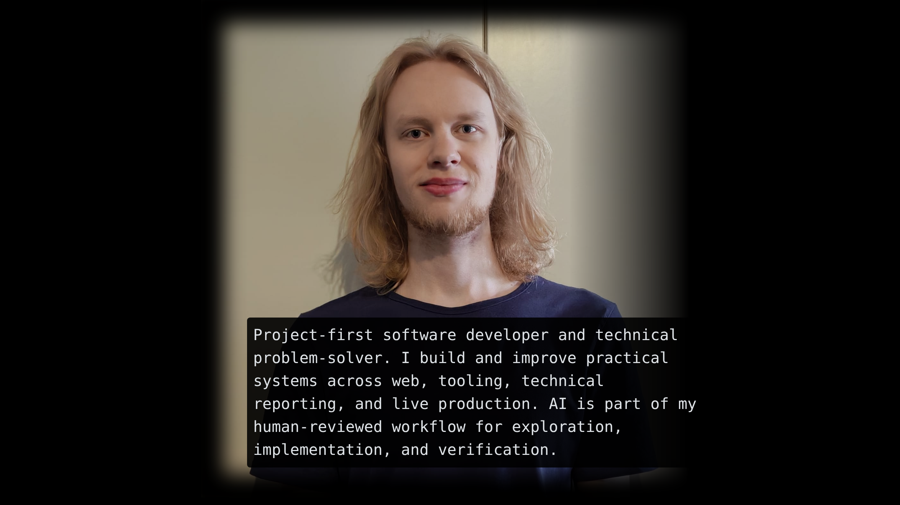

Developing AI

I am currently specializing in data-analytics and AI, through a JAMK specialization module of 30
credits.
I recognize, however, that 30 credits won't teach me everything there is to learn about
data-analytics and AI.
So, I have made it my mission to specialize myself even further, by working on my own projects.
Right now my goals are to create an SQL database for storing data, and then finding +
implementing a suitable machine learning model,
to train on the data. All of this being hosted on this very website. If I apply this project to
a personal interest of mine,
I believe I can achieve much deeper expertese, not only in the utilization of the technology,
but also in how the technology itself is being built.
All of my projects concerning AI, will be hosted on the page dedicated for AI on
this site. On this page you can also take a deeper dive into what specific skills I have learnt
in my education, and through my own projects.

Small-scale esports production

Having done speedrunning as a hobby for 9 years, I have participated in, and helped produce many
successful community events.
My main affiliation has been with the LEGO speedrunning community.
Most of the events gather money for charity,
and despite our smaller community, so far, we have been able to raise over $10,000 USD total to
several different charities through our many events.
Most events are held online, and it should be noted, that the people involved do the work as a
hobby, meaning that none of us get a salary.
Instead, we get our drive from genuine passion, in not only speedrunning, but developing our
amazing community, by organizing fun and exciting events.
My role in these events has been often on the side of the moderation team, who help organize the
events, brainstorm ideas and make content.
I've culminated extensive experience in using tools such as OBS, Twitch and YouTube, as well as
video editing with Davinci Resolve.
I have competed at many events, and also done commentary work.
I believe that E-sports events have the genuine power to unite communities,
that no other form of traditional sports, or media, could bring together. I witnessed this
first-hand,
when attending my first Counter-Strike major in Austin, Texas. I attended the event with friends
I had made through speedrunning.

This website

Having studied HTML and CSS pretty extensively, I felt confident, that I could pull of a great
portfolio website
with just HTML, CSS and JavaScript.
I started this project to learn more about all three of those languages, as well as web
development, full-stack
and about hosting a website in general. At the same time I could get bang for my buck by getting
a sweet portfolio website,
which could help me stand out from the crowd of other potential hirees.
Part of me wanted to also prove to myself, that I was worth more than the grade 1 in full-stack,
that I got, which was a result of issues long since resolved.
I don't think I'm quite there yet, but this site should already serve as a solid foundational
statement, which I can always add on to, later on.

Minecraft wall calculator
Simple calculator for determining pillar spacing along a wall.
This may seem like an odd little project, and it's not complex, I'll admit,
but it was spawned from a genuine need for a program that did exactly this functionality.
After unsuccessfully trying to find one online, I simply coded it from scratch with Python, when
I had barely any coding experience.
I still use it to this day.